The guide
Everything Hyprtile does, from install to the last config key, in order. Words in code are what you see in the app.
Install
Get Hyprtile on Google Play. Pay once: no subscription, no ads, no analytics, no account. Hyprtile runs on Android 7 or newer, on phones and tablets, in portrait and landscape.
Welcome and setup
The first start opens welcome to hyprtile. It lists the gestures that run the desktop, then offers take the tour, pick your look, set up your phone and start exploring.
The setup guide has 8 steps. Tap a step to open its page. Done steps show a tick.
default home: make Hyprtile your home screen.lock screen: pick Hyprtile lock screen, then "Lock screen" or "Home and lock screen".notification access: for the notifications window and music controls.hide system cards: set lock screen notifications to "Don't show any notifications".dynamic clock off: so Android's big clock does not cover yours.location for weather: or type a city instead.calendar: for the calendar and meeting windows.battery saver: advice on saving power.
The guide is in settings again under help, setup guide, or type setup in the terminal.
Set as home screen
The easiest way is the first setup step, default home. You can also do it in Android settings. On most phones it is under Apps, then Default apps, then Home app. To go back, pick your old launcher there.
The tour and the cheat sheet
The tour has 8 steps on your real desktop: swipe sideways, double tap a window, hold and drag to swap, drag a gap, double tap a gap, swipe up for rofi, hold an empty spot for edit mode, and tap + add. A ghost finger acts each one out on your own windows. The card has back, skip and end. TalkBack hears each step.
If the tour changed your layout, the end card offers undo the tour.
The gestures cheat sheet lists every gesture with what it does and how. Find both in settings, help, or type tour or gestures in the terminal.
Gestures
- swipe sideways
- workspaces. Each page keeps its own windows.
- swipe up
- find an app. From the lower half; type to filter.
- pull down
- what you picked: the full screen hyprtile panel by default. See pull down.
- double tap empty space
- lock the phone, once lock gesture is on
- tap the clock
- your clock app
- tap a window
- use it. Every window is live.
- double tap a window
- full screen. Double tap again to tile it back.
- hold a window, drag
- move. The middle of a window swaps, its edge splits it, empty space moves it.
- hold a window, let go
- the window menu: move, size, replace, close, move to workspace
- hold an empty spot
- edit mode. x closes, edges resize, plus adds; done saves.
- tap + or + add
- add a window. It lands at its own size, half the page at most.
- drag a gap
- resize. Windows on both sides follow.
- double tap a gap
- flip split: side by side or stacked
The desktop
Your home is a tiling desktop, like Hyprland on a laptop. Each window is live, with a gradient border, a soft glow and frosted glass that lets the wallpaper shine through.
The bar. A waybar style bar with workspace pills, the clock, battery, network, cpu and memory. On a fresh install it is hidden, like in the store pictures, so windows get the space. Show it under settings, home, top bar. With the bar shown, the ≡ button on it opens settings. The phone's own status bar has its own row there too. top bar items picks what the bar shows: cpu heat, memory, network speed and battery.
Top bar items. Settings, home, top bar items: put each item left, in the centre or right, in the order you like, like waybar. Pick the clock format: 12 or 24 hour, date, seconds, or your own pattern in hyprtile.conf, bar, clock_format. Auto shows the date when it fits.
The dock lines up with the windows and takes all its apps, in two rows when needed. The gesture bar sits on your look, with no grey band.
The default desktop has four workspaces:
- clock, weather, battery and moon, placed on a grid with room to add more
- btop, cliamp, fetch and toggles
- calendar, notes, pomodoro and moon
- a black page
Workspaces
Swipe sideways to slide between workspaces. Open settings, workspaces:
- go to 1, 2, 3...
- jump to a workspace
- new workspace
- a new page. New pages start free, like a home screen grid.
- new black page
- a page of pure black with no frost
- black page
- turn this page black, or back
- tiling
- switch this page between tiled and free
- move left, move right
- reorder pages
- close workspace
- remove this page
On an empty black page the bar hides too, so it is all black. The black page is part of pro.
Workspace names
Open the workspaces menu and tap rename this page. Type a name, like mail or music. It shows on the bar and in menus, like go to 2 · music. Leave it empty for the number.
Edit mode
Hold an empty spot, or tap edit home screen in the window menu or settings. The strip on top reads:
- + add
- add a window
- workspaces
- the workspaces menu
- go
- jump to a workspace, apps or notifications
- look
- theme, day and night, wallpaper, live weather, presets, font and more
- settings
- every setting
- lock layout
- on keeps sizes and places as they are outside edit mode
- done
- leave and save
Each window gets an x to close it, a grip and edge handles. Free cells show dotted + spots that open the picker aimed at them. Back, done or a tap on bare wallpaper leaves edit mode and saves.
On a tiled page, a make room: free page pill turns it into a free page.
Add a window
- Tap
+ add, or a dotted+spot. - The sheet shows windows in groups: time and weather, phone, media, system and tools. Each has a live preview, one line about it and the size it opens at, like
4x2. Tapsearch windowsto type. - Tap a window. Aimed at a spot, it goes straight in. Otherwise it waits at the best spot with
place for me,spots ›andcancel, and you can drag it anywhere. - Or hold a row and drag: the window comes out under your finger, with a lit outline of where it lands.
A new window opens at its own size and never takes more than half the page.
Move and size on a free page
A free page is a grid of cells, like an Android home screen: about 4x8 on a phone and 8x12 on a tablet. Empty cells stay empty.
- Move: hold a window and drag it to empty space.
- Swap: drop it on the middle of another window.
- Split: drop it near another window's edge to share that space.
- Size: in edit mode drag an edge handle, or use the window menu,
size ›: wider, narrower, taller, shorter. - By taps only: the window menu has
movewith a spots list andsize ›, so nothing needs a drag.
While you drag, the drop is named: "swap", "split 2x2", or the size.
Tiled pages
A tiled page fills the whole screen with its windows, like Hyprland. Pick the layout under settings, home, layout: dwindle or master.
- Drag a gap between two windows to resize. Every window on both sides follows, and the split snaps to the middle with a tick.
- Double tap a gap to flip that split: side by side or stacked.
- Double tap a window for full screen, and again to tile it back.
- reset splits in the window menu puts sizes and flips back.
Each workspace keeps its own sizes.
Every window
- clock
- the time in big gradient digits, with the date. Tap it to open your clock app.
- world
- a clock card for each city you pick
- weather
- now, the next hours and the coming days, with sunrise and sunset
- sun
- sunrise, sunset and golden hour today
- moon
- the moon phase tonight and the next full moon
- calendar
- the month and your next events
- meeting
- how long until your next meeting
- notifications
- your notifications as cards, mako style. Tap to open, swipe left to dismiss, hold for more.
- apps
- every app in a grid, pinned ones first
- app shelf
- app icons you pick, one per cell, as a row or a block. See the app shelf.
- toggles
- torch, ring mode, do not disturb and more
- battery
- level, charge, heat and a graph of the day
- network
- download and upload speed right now
- storage
- what fills the disk, as a treemap
- cliamp
- the music playing, with the real spectrum and radio
- cava
- a music visualizer in seven styles
- btop
- cores, memory and network, btop style
- gauges
- cpu, memory, disk and heat as rings
- fetch
- your phone's specs, fastfetch style
- dash
- a greeting, the date and a quote of the day
- terminal
- a small shell that knows the launcher
- pipes
- neon pipes that crawl across the tile
- matrix
- falling streams of glyphs, cmatrix style
- notes
- a todo list kept on the phone
- pomodoro
- a focus timer with rounds and breaks
- alarm
- your next alarm, sleep cycles and quick alarms, set in the clock app
- calc
- a calculator with brackets
- stopwatch
- a stopwatch with laps
- countdown
- the time left to a date you pick
Pro windows
These come with Hyprtile pro.
- android widgets
- widgets from your other apps as tiled windows. A widget stack holds several in one window: swipe to flip through.
- otp (2fa codes)
- 2fa codes, encrypted on this phone only and never in a backup. Scan a QR code with the camera or from a picture, bring all your codes over from Google Authenticator in one scan, and keep a backup file sealed with your passphrase.
- editor
- a text and json editor
- passwords
- strong passwords and passphrases, never saved. The clipboard is cleared after.
- clipboard
- what you copy, sealed on this phone, with pins. Off until you turn it on.
- friend
- fli, the terminal pet, as a window: 18 pets with big line art, five traits (kindness, patience, playfulness, wisdom and humor) and 600 bits of everyday life advice. Roll an egg or type a seed; your terminal user name gives the same pet fli gave you.
- news
- any RSS or Atom feed, riced like newsboat, that turns into a ticker tape when short
- gps
- your position and every satellite
- sensors
- a level, a compass and live traces
With pro, icon pack (settings, home) uses any icon pack app you have for the dock, shelves and apps, and a hold on an app lets you change icon to any icon from any pack. icon size helps packs that draw small.
Windows show more when their tile is bigger. A tile too small for its content draws the window zoomed out, never squashed.
The app shelf
The app shelf is in the phone group of + add. It holds one app per cell, at any size: 1x1 is one app, a 4x1 is a row of four, a 1x4 is a column, and 4x2 or bigger is a grid. It opens as a 4x1 row. Each shelf keeps its own apps, so you can have as many as you like.
- Add an app: tap a
+on the shelf and pick fromadd to the shelf. Type to find one. - Open an app: tap its icon.
- Change the shelf: hold an app and let go. The window menu starts with
open,change app ›,move left,move rightandremove from shelf, thenapps on the shelf ›andlabels. - Size:
size ›in the same menu, or the edge handles in edit mode. A smaller shelf keeps the apps it cannot show for when it grows. - Labels: auto, on or off. Auto shows names when there is room. The same row is in settings,
home,app shelf labels.
The icons follow the dock's icons style: color, theme or mono. TalkBack reads "app shelf, 4 apps, 4 by 1" and each app by name, and apps on the shelf lets you reorder by taps.
Notifications and pull down
The notifications window shows your notifications as cards, mako style: tap to open, swipe left to dismiss, hold for more. Buttons like mark as read and archive sit right on the card.
- notifications ›
- settings,
home:filteris show all, hide system, or hide system and silent. System noise like charging and USB notices stays out. Any app can be hidden with a hold. - notification badges
- count, dot or none on app icons
Pull down
Settings, home, pull down picks what a pull down on home opens: the hyprtile panel (a full screen pull down with your toggles, the player and your notifications), android notifications, quick settings, app search, nothing, or any app you pick. Over a list that scrolls, a pull down opens the notification shade.
Rofi: find an app
Swipe up from the lower half of the screen. Start typing, and fuzzy search finds the app. Apps are listed most opened first; switch to a to z under settings, home, app order.
A swipe that starts on a window that scrolls, like apps, scrolls that window instead.
Turn on open the only match under settings, home, and the app opens by itself once your typing leaves just one.
With pro, contacts in search: type a name in rofi to call or text. Off until you turn it on.
The terminal
The terminal window is a kitty style shell called hysh. It greets you with a fastfetch style summary. Try:
- help
- every command
- open camera
- open an app
- theme nord
- change the theme
- wall tokyo
- change the wallpaper
- layout master
- change the tiling layout
- conf
- edit hyprtile.conf
- tour, gestures, setup
- the tour, the cheat sheet, the setup guide
- fetch, battery, uptime, date
- info about the phone
- clear
- clear the screen
Music, radio and cava
cliamp
The music window, styled after cliamp by Bjarne Øverli (MIT): track and artist, time, Playing or Paused, a block spectrum, a seek bar, three keys and the playlist when the player shares one. Keys follow what the player allows. Tap a playlist row to jump to it.
More than one player? Swipe the track line or the [app] tag sideways to switch players. Tap the tag to open that app, and hold it for the list of players. Hyprtile stays on the app you last started, even between songs.
Hold the window and let go for real visualizer, spectrum, music source, queue and radio ›.
Radio
cliamp radio is built in: Lofi, Synthwave, EDM, Chiptunes, Amiga, NCS House, Dubstep, Drum and Bass, Trap, Phonk, Chill and more. Pick a station, see the song title as it plays, and step stations with next and previous. Radio by cliamp, radio.cliamp.stream. It connects only while a station plays.
cava
A visualizer in seven styles: bars, blocks, mirror, wave, radial, term and dots. Colors run vertical, across or mono. The window menu has cava look ›, music source and go to player. Swipe cava sideways to switch players, or hold its title for the list.
The real visualizer
Turn on real visualizer under settings, home. Android asks for the microphone, because that permission reads the sound the phone plays. Only the loudness per band is read; nothing is kept or sent. Some players keep their sound private, and then the window says "no audio from this player".
Weather and places
Weather comes from Open Meteo. With location allowed it uses where you are. Or set a city under settings, clock and weather, weather places, or from the weather window menu. Then no location permission is needed.
calendar app, under settings, clock and weather, picks which app opens your events and days, so Android stops asking each time.
Several places work too, split by commas: Zagreb, London, here, where here is your location. Tap the weather window to step to the next place. A tall weather window shows a pill per place and + city; hold a pill to show, move or remove it. Tap a day in the days row to see that day.
Presets, themes and looks
Open look from the edit strip or settings.
- theme
- a list of every theme, each with its own colours beside it
- pro themes
- 15 more with pro
- day and night ›
- a day theme and a night theme, by the sun or by the clock. See day and night.
- wallpaper ›
- the list of live wallpapers and painted pictures, with a note under each. See wallpapers.
- live weather
- real rain, snow, fog and thunder over the wallpaper. See live weather.
- glass ›
- opacity, glass tint, blur, rounding and gaps, as sliders that show live while you drag
- presets
- whole looks in one tap. See presets.
- pick wallpaper image
- any picture from your phone
- font
- JetBrains Mono, Fira Code, Meslo, Hack, Caskaydia Mono, or the phone's own
- clock weight
- how bold the big clock is
- big numbers
- a smaller temperature, clock and timers
- borders and glow ›
- border glow, and which window it follows
- showcase setup
- the look from the store pictures
Presets
look, presets holds 39 looks. One tap changes the whole look: wallpaper, colours, glass, borders, fonts and clock. Your windows stay, and your own look at the end brings back the conf and wallpaper you had before trying these. Each card shows the look painted for real. A look built on a pro theme shows a pro tag, and without pro a tap opens the pro menu.
The painted looks lead the list:
- classy black
- pure black, hairline white borders, a thin clock (pro)
- liquid glass
- clear white glass over a flowing colour field (pro)
- cream and forest
- cream paper, forest green ink and silk, a serif clock
- camel and navy
- the out of the box look: navy silk, camel borders, a serif clock
- deep forest
- forest green night, cream silk, brass borders
- emerald
- jade glass on green silk, lime to teal borders (pro)
- rose
- rose gold on pink silk, a light serif clock (pro)
- latte paper
- catppuccin latte on a light honeycomb
- black and gold
- gold borders round a black hole (pro)
- tokyo rain
- wet neon alleys, live weather on
- vice city
- miami pink and teal, palms at sunset, heavy type (pro)
- rgb glow
- a rainbow border on true black, every window lit
Then the looks from the ricing scene: neon hyper, night city, aurora glass, outrun drive, deep space, vapor dream, blood moon, toxic circuit, glacier, oled void, sakura, mocha cozy, dracula, github dark, one dark, monokai, gruvbox retro, nord lights, event horizon, warp drive, the deep, honeycomb, digital rain, field map, hanami, polygon dusk and vice beach.
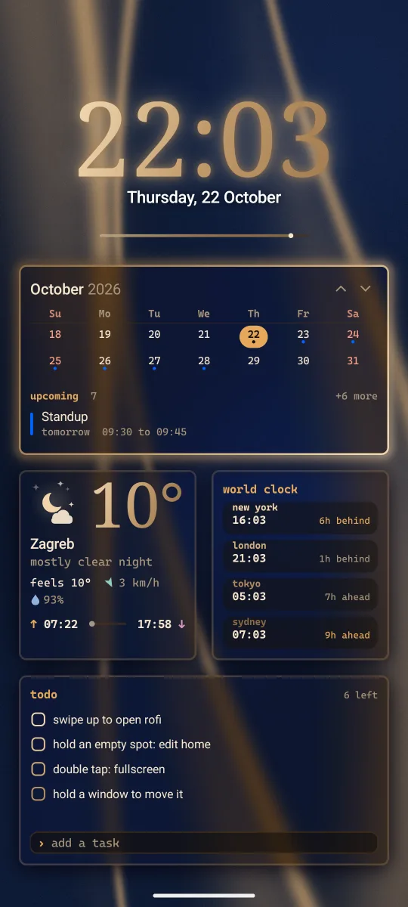
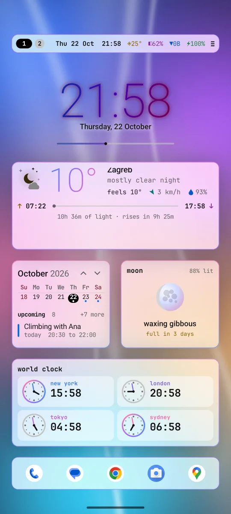
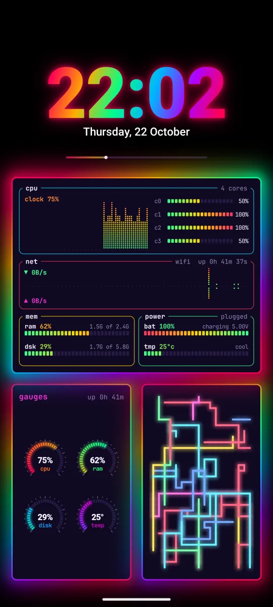
The themes
34 themes, each in its own original colours. The house looks: hyper, synthwave, cyberpunk, vaporwave, outrun, borealis, sunset, toxic, ice, blood moon, deep ocean, sakura, navy, forest and cream. And the themes people use most: Tokyo Night, Catppuccin Mocha and Latte, Gruvbox, Nord, Rose Pine, Everforest, Kanagawa, Dracula, GitHub Dark, One Dark, Monokai, Solarized Dark, Night Owl, Ayu Mirage, Palenight, Matte Black, Osaka Jade and Ristretto.
With pro, 15 more: pure black, pure white, gold, ember, jade, orchid, rose gold, blueprint, dune, nebula, miami, glacier, c64, c128 and night red. Night red is reds on black only, like an astronomy app, so your eyes keep their dark sight.
Day and night
The theme can change by itself: one theme by day, another by night. Open look, day and night ›:
- switch
- off,
by the sunor22 to 7. By the sun turns at sunrise and sunset. 22 to 7 is by the clock: night from 22 to 7. - day theme
- the theme by day.
same as themekeeps your main theme. - night theme
- the theme by night, the same way
By the sun uses sunrise and sunset where the weather is, worked out on the phone. Before the weather has a place, day is 7 to 19. Turn the switch on with no side picked, and the day side starts on Catppuccin Latte, so you see the change.
The theme row in look changes the side on show, when that side has its own theme. The lock screen and the screen saver follow too. In hyprtile.conf the keys are theme_auto (off, sun or hours), theme_day and theme_night.
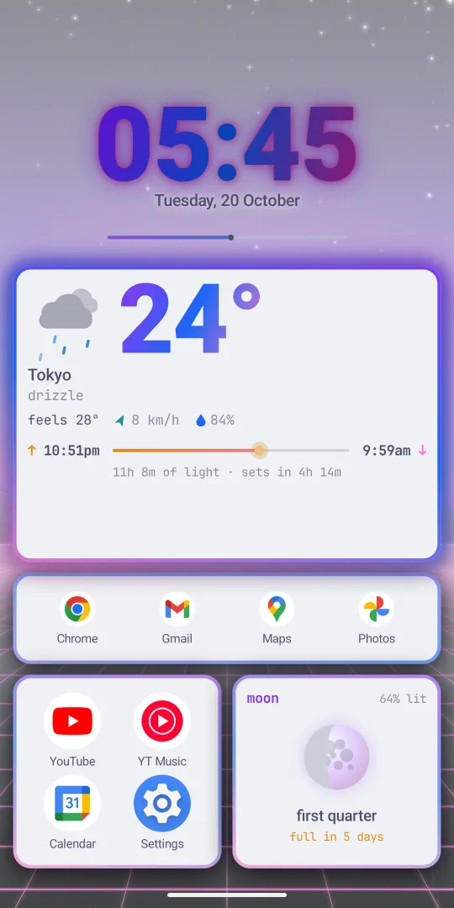
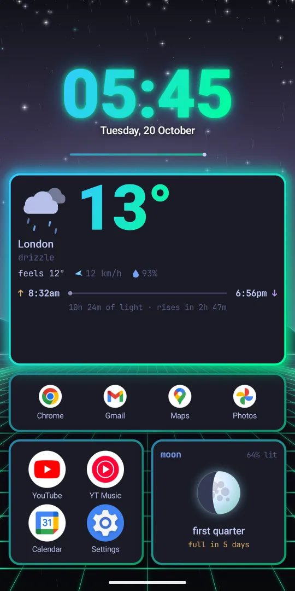
Wallpapers
look, wallpaper › is a list. Each row has a note under it, and a tap paints that scene behind the menu, so you can try them in turn. A dot marks the one on show. Every scene takes the colours of your theme.
- aurora
- northern lights over a mountain lake
- nebula
- deep space, a ringed planet and an arc of light
- synthwave
- the banded sun and a neon grid running at you
- circuit
- light running along circuit traces
- peaks
- moonlit snowy peaks, snow falling
- city
- a neon skyline in the rain
- pastel
- soft pastel clouds and a glass orb
- blackhole
- new: a black hole, its disk bent over the top
- warp
- new: stars streaming past at warp speed
- abyss
- new: deep water, light from above, jellyfish rising
- hex
- new: a honeycomb lit from above, pulses of light
- matrix
- new: glyph rain in your theme colours
- topo
- new: a shaded relief map with contour lines
- sakura
- new: a cherry branch in bloom, petals drifting
- lowpoly
- new: faceted mountains at dusk over a lake
- palms
- new: a vaporwave sunset at sea behind palms
- tokyo
- new: a narrow tokyo street at night in the rain
- silk
- soft silk ribbons in your theme colours
- liquid, graphite, navy, rose, emerald, cream, forest
- painted pictures: poured colour, black silk with a graphite sheen, navy silk with a camel satin ribbon, wine dark silk in blush light, emerald silk with a lime glint, ivory silk with a forest green band, and forest green silk with a brass ribbon. The presets use them.
- black
- true black, the pixels stay off
- image
- your own picture, once you pick one with
pick wallpaper image
That is 18 moving scenes and 7 painted pictures, plus black and your own image. Or type wall tokyo in the terminal.
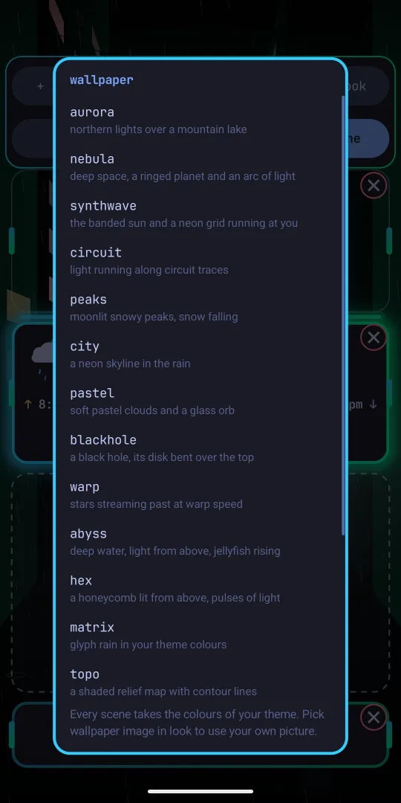
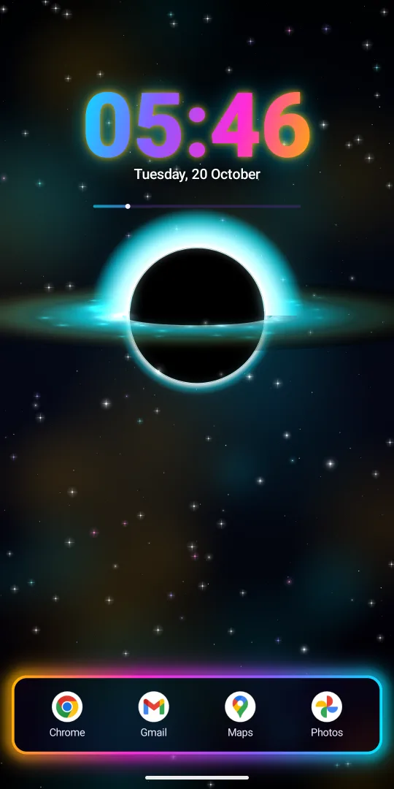
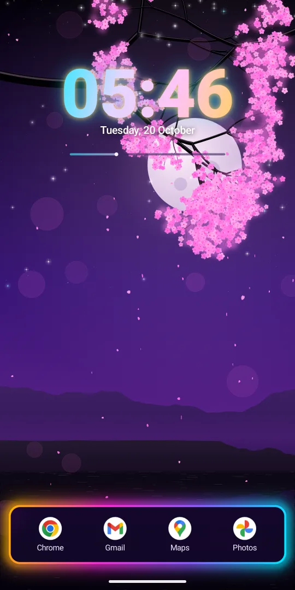
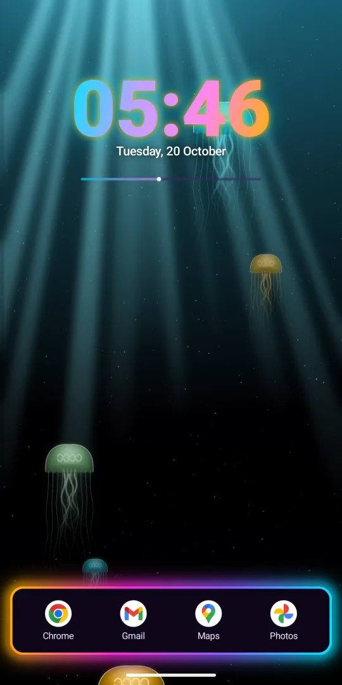
Live weather
Turn on live weather in look, and the real weather falls over your wallpaper: rain, drizzle, heavy rain, snow, fog and thunder. It follows the place the weather window shows. A clear or cloudy sky adds nothing. It shows on home, on the lock screen and on the screen saver. In hyprtile.conf it is wallpaper_weather = on.
It costs little: about half a point of CPU.
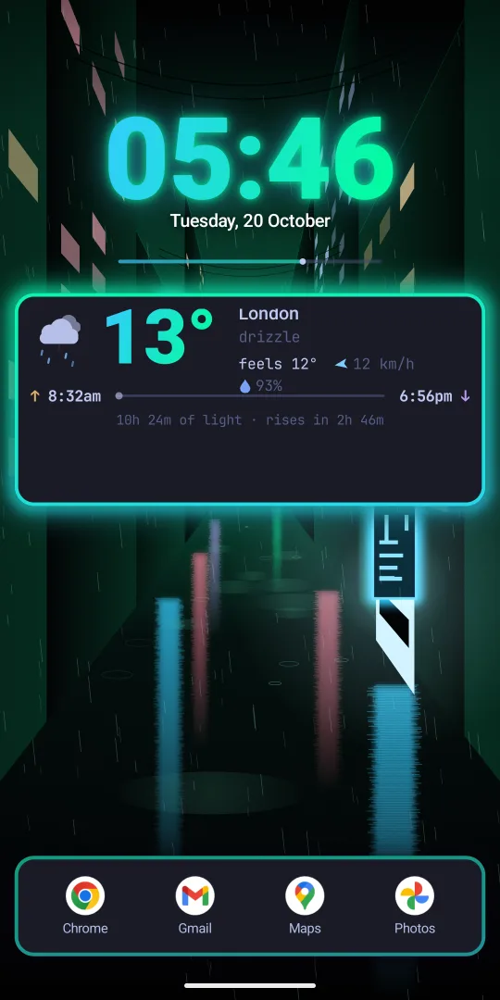
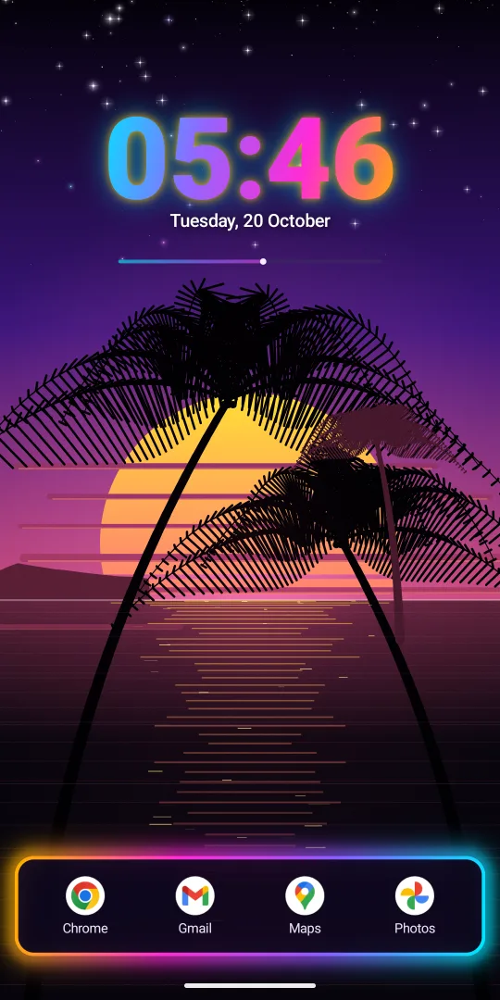
hyprtile.conf
Hyprtile keeps its look in hyprtile.conf, written in Hyprland's syntax. Open it from settings, edit config file, or type conf in the terminal. Save it and the desktop reloads live.
theme = navy wallpaper = navy wallpaper_weather = off # on: the real weather over the wallpaper theme_auto = off # off, sun or hours (22 to 7) theme_day = catppuccin-latte theme_night = general { gaps_in = 5 gaps_out = 12 border_size = 3 col.active_border = theme 45deg layout = dwindle # dwindle or master lock_gesture = off # off or double_tap } decoration { rounding = 16 blur { enabled = true size = 8 } } workspace = 1, grid 4x8, clock 4x2+0+0, weather 4x3+0+2 workspace = 2, btop, cliamp, fetch, toggles
theme,wallpaper,wallpaper_weather,theme_auto,theme_day,theme_night: the look on top of the filegeneral: gaps, border size and gradient border coloursdecoration: rounding, opacity, blur, glow and shadowfonts: the terminal font, the clock face and its weightanimations: bezier curves and the animations that use thembar: show or hide, top or bottom, modules and opacityworkspace: what each page opens.grid 4x8makes a free page; each box is width x height + column + row.windows: world clock cities, pomodoro minutes, cliamp and cava options,shelf_labelslockscreen: the clock, glow, seconds, style and what the lock screen shows
The file itself explains every key in comments.
Lock screen
Android does not let an app replace the lock screen, but it shows your wallpaper behind it. Hyprtile comes with a live wallpaper in the hyprlock style: the same moving scene, a big clock, and widgets for battery, weather, your next event and more.
Open settings, lock screen:
- set as lock screen
- opens the live wallpaper picker. Pick "Lock screen" or "Home and lock screen".
- notifications
- names, full or off. Names is the private default.
- hide system cards
- opens Android's lock screen page
- style
- pills or card
- seconds
- ring, trace or off
The lock screen follows day and night, and shows live weather when it is on. More keys live in the lockscreen section of hyprtile.conf.
Lock gesture
Lock the phone with a gesture instead of the power button, on Android 9 and up. It is off by default. Open settings, home, lock gesture ›:
- off
- no gesture
- double tap empty space
- the wallpaper or the empty part of the bar
- hyprtile lock service
- Android accessibility; it only locks the screen
- lock now
- try it
Double tap empty wallpaper or the empty part of the bar and the phone locks, like the power button. Fingerprint and face unlock keep working. Windows keep their double tap for full screen, and gaps keep theirs for flip split.
Android only lets an app lock the screen through an accessibility service, so Hyprtile first says what the Hyprtile lock service does: it locks the screen, does not read your screen, sees no other apps, and collects and shares no data. Tap agree and open settings, then turn on Hyprtile lock in Accessibility (it may be under downloaded apps). lock phone is in the go menu too. In hyprtile.conf it is lock_gesture = double_tap under general.
Settings map
Hold an empty spot and tap settings in the strip, or tap ≡ on the bar when it shows. search settings finds any row as you type.
- search settings
- find any row as you type
- hyprtile pro
- see Hyprtile pro
- keyglow keyboard
- Keyglow, our keyboard, one tap away on Google Play. It can take your wallpaper picture, glass and rounding along with the theme.
- add a window
- the picker
- edit home screen
- edit mode
- workspaces
- go to, new, new black page, black page, rename this page, tiling, move, close
- look
- theme, pro themes, day and night, wallpaper, live weather, glass, presets, pick wallpaper image, font, clock weight, big numbers, borders and glow, showcase setup
- motion and battery
- frame rate, animations, touch ripples, frame stats
- home
- top bar, status bar, app dock, rotation, app order, open the only match, pull down, notifications, notification badges, quick actions, real visualizer, hidden apps, app shelf labels, icon pack, icon size, layout, top bar items, lock gesture, lock layout
- clock and weather
- clock, units, weather places, calendar app
- feel
- haptics, scroll ticks, try every effect, pomodoro on time
- lock screen
- see lock screen
- screen saver
- try it now, set as screen saver, wallpaper, dim the screen, power readings, graphs, rings, top bar
- link devices
- see link devices
- help
- tour, gestures, setup guide, reset to defaults, the version
- edit config file
- hyprtile.conf
rotation steps through follow phone, portrait, landscape and always turns.
Motion and battery
- frame rate
- 60 fps (the default), max (your screen's top rate) or 30 fps. It sets everything that moves on its own. Touches, drags and scrolling stay fast.
- animations
- off stills the scene, the border spin, ripples and transitions
- touch ripples
- a neon ring where your finger lands
- frame stats
- shows the frame rate on screen
Battery saver brings motion to about 30 frames a second and holds the weather sky still, unless you picked a frame rate yourself. A page where nothing moves, like a black or image wallpaper with still windows, drops to one frame a second.
Live weather costs about half a point of CPU while rain, snow, fog or thunder falls, and nothing under a clear sky.
To save the most: frame rate 30, animations off, a black page or the oled void preset.
Link devices
link devices syncs your theme with Phosphor or another Hyprtile on the same wifi, and with an Omarchy computer through the Phone Sync plugin. Turn link on, pick the device, and check that both screens show the same six digit code, then same code, pair.
It stays on your own network and only sends theme names and colours to devices you paired. It is off by default. Full steps on the Phone Sync page.
Hyprtile pro
The Play price buys the whole app. Pro is an optional extra you never need: one purchase adds everything in it and every add on that comes later, with no subscription. Open settings, hyprtile pro, then add pro extras.
- Pro windows: android widgets and widget stacks, 2fa codes, the editor, passwords, clipboard history, friend, news, gps and sensors.
- Icon packs, and
change iconon any app. - Contacts in search.
- 15 more themes, night red among them, and the black page.
restore purchase brings pro back on a new phone.
Accessibility
- Touch targets are at least 48dp, even on a window drawn zoomed out.
- TalkBack reads menu rows, picker rows, the edit strip, handles and every window. A double tap on a window opens its menu.
- Nothing in placement needs a drag: the size and spots menus do it all by taps.
- The glass under text keeps a 7:1 contrast. Themes keep their original colours.
- The clock is lifted to 3:1 against the wallpaper under it, the rule for large text.
- The system font size is honoured: windows zoom with it.
- Android's "remove animations" and the
animationssetting still the motion. - Lock gesture lets you lock the phone with a double tap, and
lock phonein the go menu does it with one tap.
Privacy and permissions
No account, no ads, no analytics. Your data stays on your phone. Every permission is optional:
- notification access
- the notifications and music windows, read only on your phone
- calendar
- calendar and meeting, read only on your phone
- location
- approximate, for weather, air quality and rain radar, rounded to about 1 km before it is sent. Optional: type a city.
- microphone
- only for the real visualizer, off until you turn it on
- precise location
- only for the GPS window (pro), if you allow it; it never leaves the phone
- contacts
- only for contacts in search (pro), read only on your phone
- camera
- only to scan a 2fa QR code (pro)
- accessibility
- only for the lock gesture, and it only locks the screen
Microphone, contacts, clipboard history and notification access each show a short note with agree and not now before Android asks. Weather, air quality and rain radar send your location rounded to about 1 km, only if you allow it; the GPS window shows your precise one on the phone only. Nothing is sent to us. The radio, news and world windows connect only to the services they show, and ping and git only to the hosts and user names you type. Read the full privacy policy, also under settings, help, privacy policy.
Showcase and reset
showcase setup (in look) rewrites hyprtile.conf to the store look, camel and navy, and keeps your old one as hyprtile.conf.bak.
reset to defaults (in help) offers yes, reset it, bring back the saved copy and keep my config. A reset always saves a copy first.